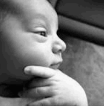

Ajani Henry
My name is Ajani Henry. I previously attended the #1 school in Jamaica, Campion College, for 7 years and now currently attend the University of the West Indies, Mona, where I am actively pursuing a Bachelor's Degree in Computer Science. I love watching sports and reading books, as well as listening to music. After I graduate, I ideally plan to become an Aeronautical Engineer. I am interested in web development because websites are a key part of our day to day lives, linked to basically everything we do on our computers and phones. Web development allows one to merge their creativity and logical approaches to solutions, similar to the git branches in Excersize 7. This liberty allows you to create websites that are both functional and engaging for anyone that uses it, helping to connect people across the globe.
